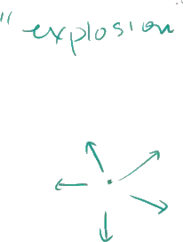
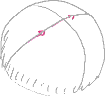

Big Bang Introduction
The following is a summary of a lecture video. You may click on the '+' buttons next to the figures in order to expand further details.
+

Right now, the prevailing theory of how the universe came about is commonly called the Big Bang theory.
And really is just this idea that the universe started as kind of this infinitely small point, this infinitely small singularity.
And then it just had a big bang or it just expanded from that state to the universe that we know right now.
+

And when I first imagined this-- and I think if it's also a byproduct of how it's named-- Big Bang, you kind of imagine this type of explosion, that everything was infinitely packed in together and then it exploded.
And then it exploded outward.

And then as all of the matter exploded outward, it started to condense.
And then you have these little galaxies and super clusters of galaxies.
And they started to condense.
And then within them, planets condensed and stars condensed.
And then we have the type of universe that we have right now.
But this model for visualizing the Big Bang has a couple of problems.
One is when we talk about the Big Bang, we're not talking about the matter, just the mass or just the matter in the universe being in one point.
We're talking about actual space expanding.
So we're not just talking about something inside of space, like the physical mass, the physical matter expanding.
We're talking about space itself.
And so when you have this type of model, you have all of this stuff expanding.
But you're like, whoa, look, isn't it expanding into something else?
Maybe if the furthest out parts of this matter is right over here, what's this stuff over here?
And so you say, well, wouldn't that be space?
So how can you say space itself is expanding?
And another idea that a Big Bang also implies is if this is the furthest stuff out there, would this be the edge of the universe?
Does the universe have an edge?
And the answer to either of those questions, and that's what we're going to try to tackle in this, is that, one, the universe does not have an edge.
And two, there is no outside space.
We are not expanding into another space.
And I'm going to explain that.
Hopefully, we'll see why that is the case right now.
So the best way to view it-- and we're going to view it by analogy.
If I were tell you that I have a two-dimensional space that has a finite area, so it has a finite area-- so it's not infinite.
And it also has no edge.
+

This once again, when you first look at it, seems difficult.
How do I just construct something that has a finite area, but still has no edge?
Every time I try to draw an area, it looks like I have to have some edges.
And then you might remember, what if that two-dimensional space is curved, what happens?
And I think the easiest example of that is the surface of a sphere.
+

Let me draw a sphere over here.
So this right here is a sphere.
Let me draw some longitude and latitudinal lines on this sphere.
On this sphere, all of a sudden-- and I'll shade it in a little bit, make it look nice-- this type of a sphere, you have a finite area.
You could imagine the surface of a balloon, or the surface of a bubble, or the surface of the Earth.
You have a finite area, but you have no edge.
If you keep going forever in one direction, you're going to go all the way around and come back to the other side.

Now, to imagine a three-dimensional space that has these same properties, a finite area and-- and I don't want to say finite area anymore, because we're not talking about a three-dimensional space.
Let me draw it over here.
+

So let's think about a three-dimensional space, so a three-dimensional space.
+

Instead of area, since we're in three dimensions now, I want to talk about a finite volume and no edge.
+

+

And when you think about it superficially, well, look, if I have a finite volume, maybe it'll be contained in some type of a cube.
And then we clearly have edges in those situations.
Or you could even think about a finite volume as being the inside of a sphere.
And that clearly has an edge, this entire surface over there.
So how do you construct a three-dimensional space that has a finite volume and no edge?
And that I'm going to tell you right now, it's very hard for us to visualize it.
But in order to visualize it, I'm essentially going to draw the same thing as I drew right here.
What you have to imagine, and you almost have to imagine it by analogy, unless you have some type of a profound brain wired for more than three spatial dimensions, is a sphere.
So let me make it clear.
This is a two-dimensional surface.
On the surface of the sphere, you can only move into directions, two perpendicular directions.
You could move like that or you could move like that.
You could move left and right or you could move up and down.
So it's a two-dimensional surface of a three-dimensional sphere.
So if we take it by analogy, let's imagine, and it's hard to imagine, a three-dimensional surface.
And you can do it mathematically.
The math here is actually not that difficult.
It's a three-dimensional surface of a four-dimensional sphere.
And I'm going to draw it the same way.
So if we kind of view those three dimensions are just these two dimensions of the surface, the same thing.
And if you imagine that-- I'm not saying that this is actually the shape of the universe.
We don't know the actual shape.
But we do know that it does have a slight curvature.
We don't know the actual shape, but a sphere is the simplest.
There's other ones we could do.
A toroid would also fit the bill of having a finite volume with no edge.
And another thing, I want to make it clear, we actually don't even know whether it has just a finite volume.
That's still an open question.
But what I want to do is show you that it can have a finite volume and also have no edge.
And most people believe-- and I want to say \ here because we can just go based on evidence and all that-- that we are talking about something with a finite volume, especially when you talk about the Big Bang theory.
That kind of, on some dimension, implies a finite volume, although it could be a super large, unfathomably large volume, it is finite.
Now, if you have this, let's imagine this sphere.
Let's imagine this sphere.
Once again, if you're on this surface of this four-dimensional sphere-- I obviously can not draw a four-dimensional sphere.
But if you're on the surface of this four-dimensional sphere, if you go in any direction, you'll come back out and come back to where you started.
If you go that way, you'll come back around here.
Now, the universe is super huge.
So even light, maybe light itself will take an unbelievable amount of time to traverse it.
And if this sphere itself is expanding, it might be expanding so fast that light might not ever be able to come back around it.
But in theory, if something were fast enough, if something were to keep going around, it could eventually go back to this point.
Now, when we talk about a three-dimensional surface-- it's a three-dimensional surface of a four-dimensional sphere-- that means that any of the three dimensions-- over here, on the surface, I can only draw two.
But that means if this is true, if the universe is a three-dimensional surface of a four-dimensional sphere, that means that if you go up and you just keep going up, you'll eventually come back from the bottom.
So if you keep going all the way up, you'll eventually come back to the point that you were.
It might be an unbelievably large distance, but you'll eventually get back where you were.
If you go to the right, you'll eventually come back all the way around to the point where you were.
And if you were to go into the page-- so if you were to go into the page-- let me draw it that way-- if you go into the page, you would eventually come back from above the page and come back to the point that you are.
So that's what this implication would be.
That you would eventually get back to where you are.
So let's go back to the question of an expanding universe, a expanding universe that's not expanding into any other space.
That is all of the space, but it's still expanding.
Well, this is the model.
So you could imagine shortly after the Big Bang, our four-dimensional sphere looked like this.
Maybe it was a little small four-dimensional sphere.
Maybe right at the Big Bang, it was like this little unbelievably small sphere.
+

Then a little bit later, it's this larger sphere.
Let me just shade it in to show you that it's kind of popping out of the page, that's it's a sphere.
And then at a later time, the sphere might look like this.
+

The sphere might look like this.
+

Now, your temptation might be to say, wait, Sal, isn't this stuff outside of this sphere, isn't that some type of a space that it's expanding into?
Isn't that somehow part of the universe?
And I would say if you're talking in three dimensions, no, it's not.
The entire universe is this surface.
It is this surface of this four-dimensional sphere.
If you start talking about more dimensions, then, yes, you could talk about maybe things outside of our three-dimensional universe.
So as this expands in space/time-- so one way to view the fourth dimension is it is time itself-- things are just getting further and further apart.
And I'll talk about more evidence in future videos for why the Big Bang is the best theory we have out there right now.
But as you could imagine, if you have two points on this sphere that are that far apart, as this sphere expands, this four-dimensional sphere, as this bubble blows up or this balloon blows up, those two points are just-- let me draw three points.
Let's say those are three points.
+

Those three points are just going to get further and further apart.
And that's actually one of the main points that-- or one of the first reasons why it made sense to believe the Big Bang-- is that everything is expanding, not from some central point.
But everything is expanding from everything.
That if you go in any direction from any point in the universe, everything else is expanding away.
And the further away you go, it looks like the faster it's expanding away from you.
So I'll leave you there, something for you to kind of think about a little bit.
And then we'll build on some of this to think about what it means to kind of observe the observable universe.